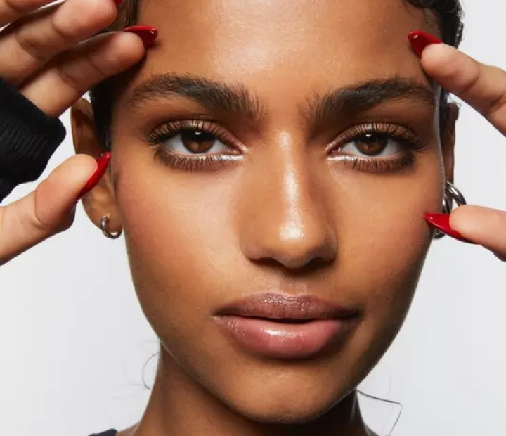
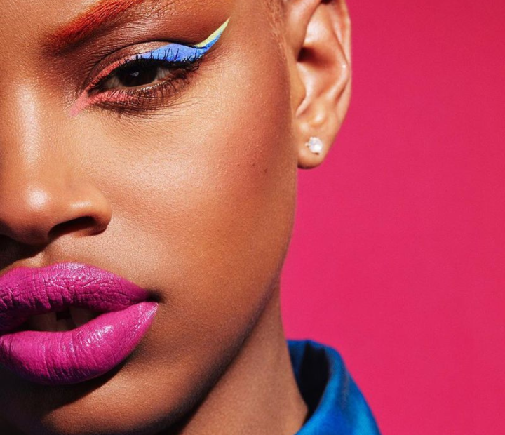
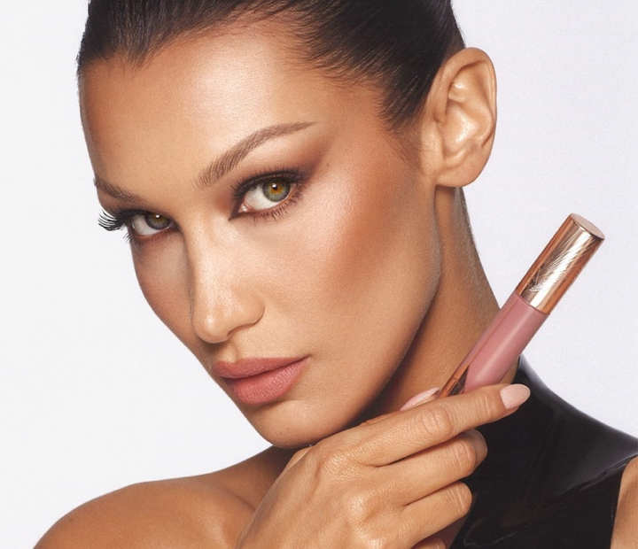

Dicas de Beleza Universitárias: Como Manter um Visual Deslumbrante na Correria do Dia a Dia
ATUALIDADE

Nos últimos anos, testemunhamos uma mudança significativa nas tendências de maquilhagem, refletindo uma evolução nos padrões de beleza e nas preferências dos consumidores. De 2016 a 2024, observamos uma dicotomia interessante entre duas abordagens distintas: clean makeup e glam. Neste artigo, vamos explorar como essas tendências emergiram, evoluíram e coexistem na cena da maquilhagem contemporânea.
2016-2018: A Ascensão do Clean Makeup
Durante esse período, houve um aumento na popularidade do clean makeup, uma abordagem que enfatiza uma aparência natural e leve. Os consumidores começaram a valorizar a pele radiante e sem esforço sobre looks pesados e dramáticos. Marcas como Glossier e Milk Makeup se destacaram por suas fórmulas leves, embalagens minimalistas e mensagens de empoderamento relacionadas à beleza natural. A tendência clean makeup foi impulsionada pela crescente demanda por produtos de skincare com benefícios de maquilhagem, como primers com cobertura de luz, hidratantes com cor e blushes em gel.
2019-2021: O Renascimento do Glam
Enquanto o clean makeup continuava a ser popular, observamos um ressurgimento do glam na maquilhagem. Influenciado pelo boom das redes sociais e pela cultura das celebridades, o glam voltou com força total, com looks exuberantes, brilhantes e extravagantes. Paletas de sombras vibrantes, batons líquidos metálicos e destaque cintilante tornaram-se elementos essenciais do arsenal de maquilhagem de muitos. Marcas como Fenty Beauty e Huda Beauty capitalizaram essa tendência, lançando produtos inovadores e campanhas de marketing impactantes que celebram a autoexpressão e a individualidade.
2022-2024: Harmonizando Clean e Glam
À medida que nos aproximamos do presente, testemunhamos uma harmonização entre as tendências clean makeup e glam. Os consumidores agora valorizam a versatilidade, optando por looks que podem ser adaptados para ocasiões diversas. Marcas como Sephora Collection e Charlotte Tilbury responderam a essa demanda, oferecendo produtos que podem ser usados tanto para um visual clean e discreto quanto para um glam ousado e festivo. A maquilhagem "no makeup makeup" tornou-se uma categoria popular, proporcionando uma aparência natural e luminosa com um toque sutil de glamour.
À medida que nos aproximamos do presente, testemunhamos uma harmonização entre as tendências clean makeup e glam. Os consumidores agora valorizam a versatilidade, optando por looks que podem ser adaptados para ocasiões diversas. Marcas como Sephora Collection e Charlotte Tilbury responderam a essa demanda, oferecendo produtos que podem ser usados tanto para um visual clean e discreto quanto para um glam ousado e festivo. A maquilhagem "no makeup makeup" tornou-se uma categoria popular, proporcionando uma aparência natural e luminosa com um toque sutil de glamour.
A evolução da maquilhagem de 2016 a 2024 reflete a diversidade da beleza contemporânea e a liberdade de expressão dos consumidores. Enquanto o clean makeup celebra a beleza natural e a simplicidade, o glam permite a experimentação e a criatividade. No entanto, essas tendências não são mutuamente exclusivas; pelo contrário, coexistem em um cenário de maquilhagem cada vez mais inclusivo e diversificado. Como resultado, os consumidores têm mais opções do que nunca para expressar sua individualidade e realçar sua beleza, seja através de um visual clean e discreto ou de um glam audacioso e deslumbrante.